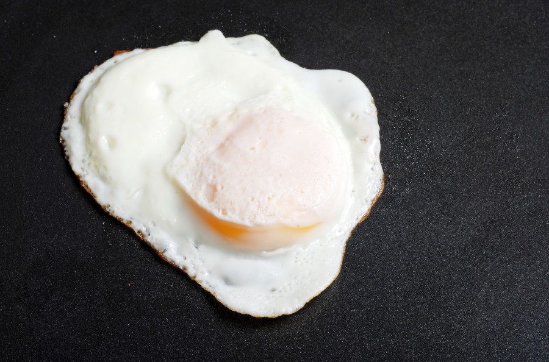

Eggs Over Easy

Eggs Over Easy
All you need is good quality eggs, salt, pepper, and butter.
Heat up your skillet to medium with butter and get ready to add eggs. Flip once and let off heat until whites are cooked through but yolk is still runny.
Ingredients
- Eggs
- Butter
- Salt and Pepper
Steps
- Heat up skillet with butter to medium.
- Place eggs in skillet flipping when eggs white is cooked just through.
- Let continue cooking off heat
- When egg whites are cooked through but yolk is still runny take out of skillet.
- Serve with salt, pepper and hot sauce if wanted.
- Eat